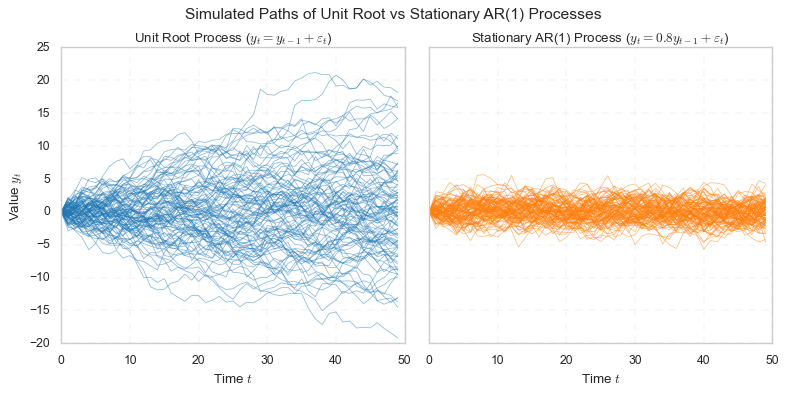
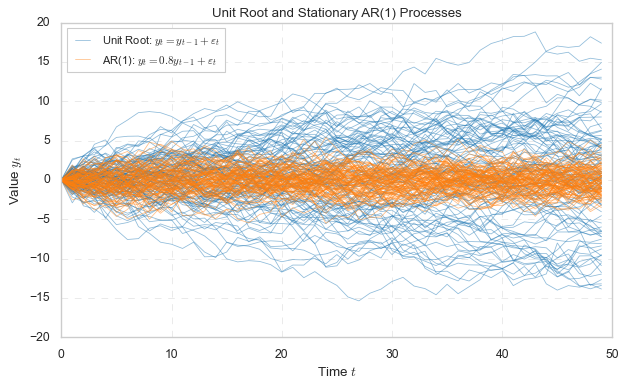
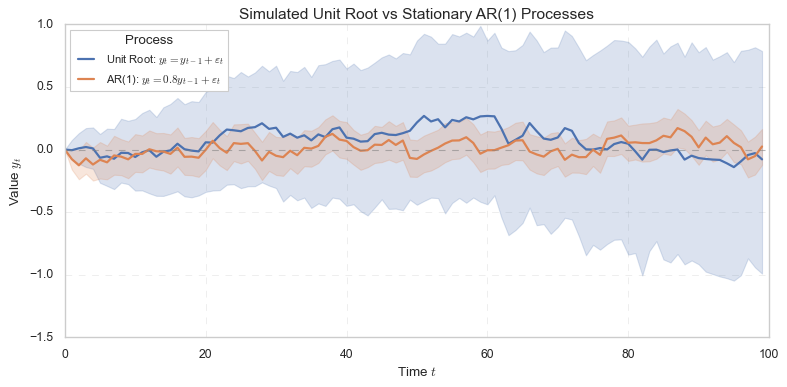
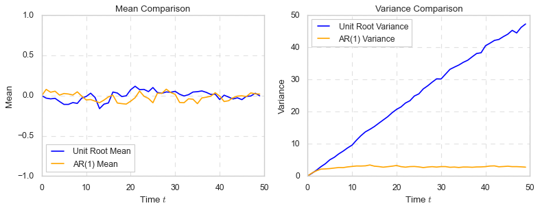

# clear all variables
%reset -f 6 直方图
6.1 基本原理
直方图（Histogram）是一种常用的数据可视化工具，用于展示数据的分布情况。通过将数据分成若干区间（bins），并统计每个区间中的数据点数目，并以矩形的高度表示频数、频率或密度。直方图能够直观地反映数据的集中趋势、离散程度以及分布形态。
设有一组日收益率数据 \(\{r_1, r_2, \ldots, r_n\}\)，我们将其划分为 \(K\) 个等宽的区间，每个区间的宽度为：
\[ h = \frac{\max(r) - \min(r)}{K} \]
第 \(k\) 个区间为 \([a_k, a_{k+1})\)，其频数记为 \(f_k\)，那么对应的矩形高度就是 \(f_k\)（或标准化后的频率）。绘图过程中，横轴表示收益率区间，纵轴表示该区间的频数或频率。
6.2 一个简单的例子
为了理解直方图的用途，我们先看一个简单的例子。某学习小组包括 10 名学生，年龄介于 16 岁到 26 岁之间。
import numpy as np
# Generate the age distribution array
ages = np.array([16] + [18] * 4 + [19] * 4 + [26])
print("Generated Ages:", ages)
print("Number of Students:", len(ages))Generated Ages: [16 18 18 18 18 19 19 19 19 26]
Number of Students: 10由于数据量很小，细心的读者可能已经算出了每个年龄的学生人数：16 岁 1 人，18 岁 4 人，19 岁 4 人，26 岁 1 人，甚至会列出如下表格：
| 年龄 | 16 | 18 | 19 | 26 |
|---|---|---|---|---|
| 人数 | 1 | 4 | 4 | 1 |
通过这种方式，我们可以清楚地看到每个年龄段的学生人数分布情况。在制作上述表格的过程中，我们其实是对原数据进行了分组统计：将原数据分成四组，进而统计每组的人数。采用图形的方式可以更直观地展示上述信息：

6.3 频数、频率与密度
频数（Frequency）是指在某个区间内观察值的个数。
频率 是指该区间内观察值的个数 (\(n_k\)) 占总观察值个数 (\(n\)) 的比例。有时也会把「频率」称为「相对频数 (Relative Frequency)」或「占比 (proportion)」，计算公式为：
\[ f_k = \frac{n_k}{n} \]
显然，频率的总和为 1，即 \(\sum_{k=1}^{K} f_k = 1\)。
密度（Density）是指单位区间内的频率，通常用于归一化处理。密度可以通过以下公式计算： \[ d_k = \frac{f_k}{h} \]
其中，\(d_k\) 是第 \(k\) 个区间的密度，\(h\) 是区间宽度。密度的总和不一定为 1，而是满足 \(\sum_{k=1}^{K} d_k \cdot h = 1\)。对于连续变量，当区间宽度趋近于 0 时，密度函数的极限就是概率密度函数（PDF）。
此外，绘制直方图时，若纵轴是频率，则取值范围为 \([0, 1]\)；若纵轴是密度，则取值范围为 \([0, \infty)\) (因为，当 \(h\) 趋近于 0 时，\(d_k\) 可以趋近于无穷大)。
从三者的定义也可以看出，无论纵轴为频数、频率还是密度，最终的直方图形状是一样的，只是纵轴的数值不同。
# 列表呈现频数、频率和密度
import pandas as pd
# 计算唯一值及其计数
unique, counts = np.unique(ages, return_counts=True)
# 计算频率
frequencies = counts / counts.sum()
# 计算带宽 h
K = 4 # Number of bins
h = (ages.max() - ages.min()) / K
print("Bandwidth (h):", h)
# 计算密度
density = frequencies / h
# 创建一个 DataFrame 包含计数、频率和密度
tabulated_ages = pd.DataFrame({
"count": counts,
"frequency": frequencies,
"density": density
}, index=unique)
# 显示更新后的表格
print(tabulated_ages)Bandwidth (h): 2.5
count frequency density
16 1 0.1 0.04
18 4 0.4 0.16
19 4 0.4 0.16
26 1 0.1 0.04import matplotlib.pyplot as plt
import numpy as np
# 绘制图形
fig, axes = plt.subplots(1, 3, figsize=(9, 3))
# 子图 1: 频数分布柱状图
axes[0].bar(unique, counts, color='skyblue', edgecolor='black')
axes[0].set_ylabel('Frequency')
axes[0].set_yticks(range(max(counts) + 1))
# 子图 2: 频率分布柱状图
axes[1].bar(unique, frequencies, color='lightgreen', edgecolor='black')
axes[1].set_ylabel('Relative Frequency')
# 子图 3: 密度分布柱状图
axes[2].bar(unique, density, color='salmon', edgecolor='black')
axes[2].set_ylabel('Density')
plt.tight_layout()
plt.show()
6.4 直方图的绘制
简单而言，绘制直方图的基本步骤为：
- 选择区间数：根据数据的范围和分布情况，选择合适的区间数 \(K\)。
- 计算区间宽度：根据数据的最大值和最小值，计算每个区间的宽度 \(h\)。
- 统计频数：统计每个区间内的数据点数量，得到频数 \(f_k\)。
- 绘制直方图：使用绘图工具将频数、频率或密度绘制成直方图，横轴表示区间，纵轴表示频数、频率或密度。
下面做详细介绍。
假设我们有一组数据 \(\{x_1, x_2, \ldots, x_N\}\)，绘制直方图的主要步骤如下： >Step 1： 确定区间总数（K）
将数据划分为 \(K\) 个区间。常见的选择区间总数的方法有：
经验法则：通常取 \(K = 10\) 或 \(K=20\)。
斯特金斯法则（Sturges’ Rule）
\[K = \lceil \log_2 N + 1 \rceil\]
其中，\(\lceil z \rceil\) 表示对 \(z\) 向上取整。
费根纳法则（Freedman-Diaconis Rule）
\[K = \lceil \frac{2 \cdot IQR \cdot N^{-\frac{1}{3}}}{h} \rceil\]
其中，\(IQR\) 为四分位距，\(h\) 为区间宽度。
相机调整法则（Rice Rule） 在 Stata 中，区间总数 \(K\) 的选取与样本数 \(N\) 有关：
\[K = \min \left\{\sqrt{N}, \frac{10 \ln(N)}{\ln(10)}\right\}\]
该方法结合平方根法则和对数法则，适用于不同规模的数据集。当 \(N<784\) 时，可直接采用 \(\sqrt{N}\) 快速计算。
Step 2： 确定区间宽度
区间宽度 \(h\) 根据数据的范围和区间总数 \(K\) 确定： \[ h = \frac{\max(x) - \min(x)}{K} \]
Step 3： 确定区间边界
设数据的最小值为 \(x_{\min}\)，最大值为 \(x_{\max}\)，则区间的边界可以表示为：
\[ b_k = x_{\min} + (k-1) \cdot h \quad \text{for } k = 1, 2, \ldots, K+1 \]
每个区间为 \([b_k, b_{k+1})\)，最后一个区间为 \([b_K, b_{K+1}]\)。
Step 4： 统计每个区间的观察值个数
统计每个区间内的观察值个数，即每个区间的频数 \(f_k\)：
\[ f_k = \sum_{j=1}^{N} I(b_k \leq x_j < b_{k+1}) \quad \text{for } k = 1, 2, \ldots, K \]
其中 \(I(\cdot)\) 为指示函数，当条件为真时，取值为 \(1\)，否则取值为 \(0\)。
Step 5： 绘制直方图
绘制直方图时，将每个区间的频数 \(f_k\) 作为柱状图的高度。对于区间 \([b_k, b_{k+1})\)，其对应的柱状图高度为 \(f_k\)，宽度为 \(h\)。
当然，也可以根据需要用频率或密度来绘制直方图。
6.5 Python 实操
'''
**提示词**
生成 age 变量，取值范围 16-35 岁，N = 100，基本服从正态分布。
然后绘制直方图，并给出解释，尤其是带宽的选择。
'''
import numpy as np
import matplotlib.pyplot as plt
# 生成年龄分布数据
np.random.seed(1234) # For reproducibility
age = np.random.normal(loc=21, scale=7, size=100).astype(int)
age = age[(age >= 16) & (age <= 35)] # Restrict values to the range 16-35
# 绘制直方图
plt.figure(figsize=(3, 3))
plt.hist(age, edgecolor='black', alpha=0.7)
plt.show()
本例中，我们只在 plt.hist() 函数中指定了变量名 age，而没有指定 bins 和 rwidth 参数。此时，函数会自动选择合适的区间数量和宽度。根据数据的分布情况，函数会将数据划分为 10 个区间，并计算每个区间内的数据点数量。
我们也可以自行制定 bins 和 rwidth 参数。如下命令的效果与上面相同：
K = 10 # Number of bins
h = (age.max() - age.min()) / K # Bandwidth
# 指定 bins 数量
plt.hist(age, bins=K, edgecolor='black', alpha=0.7)
# 指定 rwidth
plt.hist(age, rwidth=h, edgecolor='black', alpha=0.7)'''Prompt
绘制一行图形，3 个子图，分别设定 K=4, K=10, K=20。
横轴刻度采用图形标题，横轴和纵轴标题等信息，做最基本的图形即可
'''
fig, axes = plt.subplots(1, 3, figsize=(6, 2)) # 3 个子图
K_values = [4, 10, 20] # 设置三种 K 值
# Plot histograms for each K
for i, K in enumerate(K_values):
axes[i].hist(age, bins=K, edgecolor='black', alpha=0.7)
axes[i].set_title(f'K={K}') # 设置标题
axes[i].set_yticks(range(0, 32, 5)) # 重要！三个子图的 y 轴刻度一致
plt.tight_layout()
plt.show()
从上图中可以看出：
不同的 bins 会导致直方图的分组方式不同，从而影响数据分布的可视化效果。较少的 bins 会导致信息的过度简化，而较多的 bins 则可能使图形过于复杂，难以观察整体趋势。
为了增加对比对，我们设定了
axes[i].set_yticks(range(0, 32, 5))。可以看出，当我们划分的组数较多时 (bins值较大)，落入每个区间的数据点数量自然会相对变少，导致直方图的高度不均匀，且可能出现一些区间的高度为 0 的情况。因此，过大的bins值虽然能够提供更精细的分布信息，但也可能导致我们「只见树木，不见森林」。
多数情况下，我们都无需手动指定 bins 和 rwidth 参数，直接使用 plt.hist() 函数自动选择的最优值即可。
6.5.1 plt.hist() 函数详解
plt.hist() 函数是 matplotlib 库中用于绘制直方图的函数。其基本语法如下：
plt.hist(x, bins=None, range=None, density=False,
weights=None, cumulative=False, bottom=None,
histtype='bar', align='mid', orientation='vertical',
rwidth=None,
color=None, edgecolor=None, alpha=None,
label=None, stacked=False, **kwargs)其中，常用参数如下： - x：表示要绘制直方图的数据，可以是列表、数组或 pandas 的 Series 对象。 - bins：表示区间的数量或边界，可以是整数或列表。若为整数，则表示将数据划分为 bins 个等宽区间；若为列表，则表示指定每个区间的边界。如 bins=20，或 bins=[-0.1, -0.05, 0, 0.05, 0.1] - density：布尔值，表示是否将直方图标准化为概率密度（面积为 1）。默认为 False。 - weights：表示每个数据点的权重，可以是与 x 等长的数组。 - cumulative：布尔值，表示是否绘制累积直方图。默认为 False。 - bottom：表示每个柱子的底部位置，可以是与 x 等长的数组。 - histtype：表示直方图的类型，可以是 'bar'、'step' 或 'stepfilled'。 - align：表示柱子的对齐方式，可以是 'left'、'mid' 或 'right'。 - orientation：表示柱子的方向，可以是 'vertical' 或 'horizontal'。 - rwidth：表示柱子的宽度，可以是一个浮点数，表示相对于区间宽度的比例。 - color：表示柱子的颜色，可以是字符串或 RGB 值。 - edgecolor：表示柱子的边框颜色。 - alpha：表示柱子的透明度，可以是一个浮点数，范围在 0 到 1 之间。 - label：表示图例标签。 - stacked：布尔值，表示是否堆叠直方图。默认为 False。 - kwargs：其他参数，可以传递给 matplotlib 的绘图函数，例如 figsize=(10, 6)。
6.6 实例
6.7 注意事项
在比较直方图时，为了便于观察差异，建议将直方图垂直排列，以便更直观地观察横向变化。例如，尝试比较图中顶部的两个直方图。若将两个直方图水平排列，通常会因横向偏移而难以识别它们之间的差异。

图：当排列直方图以便于比较时，建议垂直对齐以观察横向变化。
6.7.1 扩展阅读
6.8 直方图实例
6.8.1 是
This Python code creates a histogram using the Matplotlib library to visualize data about salaries in France. It was originally produced by the INSEE.

6.9 扩展阅读
6.9.1 原理
- matplotlib - Histogram bins, density, and weight。详细介绍了 bins 的选择对直方图形状的影响，以及密度的概念。
6.9.2 Stata 直方图
- 万莉, 2020, Stata绘图全解：绘图语法-条形图-箱型图-散点图-矩阵图-直方图-点图-饼图, 连享会 No.34.
- 万莉, 2020, Stata：读懂直方图, 连享会 No.479.
- 刘欣妍, 史柯, 2022, Stata：描述性统计分析新命令-dstat, 连享会 No.926.
- 孙晓艺, 2024, Stata绘图大礼包：27个常用的可视化范例及代码, 连享会 No.1372.
- 汪京, 2024, multihistogram-多变量直方图, 连享会 No.1457.
- 袁子晴, 2021, 史上最牛Stata绘图模板-schemepack：酷似R中的ggplot2, 连享会 No.819.
- 谢嘉伟, 2024, Stata 绘图：binscatterhist-分仓散点图+直方图, 连享会 No.1506.
- 郑宇, 2024, Stata绘图：加权直方图, 连享会 No.1425.
6.10 MC 模拟：AR(1) 过程与单位根过程
提示词：
- 目的：模拟分析单位根过程和平稳 AR(1) 过程的时序特征
- 数据：生成单位根过程和 AR(1) 过程的随机数，每种各 100 个序列，T = 50 期
- 图示：绘制上述两种过程的时序图，一共绘制三幅图形
- 风格1：两个序列分别绘制在两个子图中，1 行 2 列
- 风格2：两个序列绘制在同一个子图中，使用不同颜色区分
- 风格3：两个序列绘制在同一个子图中，显示每个时点上的均值和 95% 置信区间
- 标注：添加标题、坐标轴标签、图例等
- 用 latex 语法添加数学公式
- 参考风格：https://matplotlib.org/stable/gallery/statistics/time_series_histogram.html
- 配文：讲义风格；语言平实；不要添加任何表情符号
- 整体介绍：Markdown 文本框
- 介绍该模拟项目的目的，DGP 思路和公式；
- 平稳性的概念；
- AR(1) 过程和单位根过程的的数学表达式；
- 平稳性特征 (具体说明两个序列的均值和方差是否满足平稳性的定义)；
- 预期验证的主要结论
- 每个风格的图形配一个 Markdown 文本框
- 解释该图形的要点
- 总结从该图的模拟数据中得到的核心结论
- 整体介绍：Markdown 文本框
- 输出：
- 配文：Markdown 格式或可以复制为 Markdown 格式的文本
- 代码：Python 代码
- 图形：PNG 格式的图片，存储到当前工作路径下的 figs 文件夹中 (若无，则创建)
import numpy as np
import pandas as pd
import matplotlib.pyplot as plt
import seaborn as sns
# 设置风格
sns.set(style="whitegrid")
plt.rcParams["figure.figsize"] = (10, 5)
# 模拟参数
N = 100 # 模拟序列个数
T = 50 # 时间长度
phi = 0.8 # AR(1) 系数, eg. 0.01, 0.8, 0.95, 0.97
np.random.seed(142)
# 生成单位根过程
unit_root = np.zeros((N, T))
for i in range(N):
eps = np.random.normal(size=T)
for t in range(1, T):
unit_root[i, t] = unit_root[i, t-1] + eps[t]
# 生成平稳 AR(1) 过程
ar1 = np.zeros((N, T))
for i in range(N):
eps = np.random.normal(size=T)
for t in range(1, T):
ar1[i, t] = phi * ar1[i, t-1] + eps[t]
# 绘图：分两张子图分别绘制每条路径
fig, axes = plt.subplots(1, 2, figsize=(10, 5), sharey=True)
# 左图：单位根过程
for i in range(N):
axes[0].plot(unit_root[i], color='tab:blue', alpha=0.5, linewidth=0.7)
axes[0].set_title("Unit Root Process ($y_t = y_{t-1} + \\varepsilon_t$)")
axes[0].set_xlabel("Time $t$")
axes[0].set_ylabel("Value $y_t$")
axes[0].grid(True, linestyle="--", linewidth=0.4, alpha=0.6)
# 右图：平稳 AR(1) 过程
for i in range(N):
axes[1].plot(ar1[i], color='tab:orange', alpha=0.5, linewidth=0.7)
axes[1].set_title(f"Stationary AR(1) Process ($y_t = {phi} y_{{t-1}} + \\varepsilon_t$)")
axes[1].set_xlabel("Time $t$")
axes[1].grid(True, linestyle="--", linewidth=0.4, alpha=0.6)
# 总标题与美化
plt.suptitle("Simulated Paths of Unit Root vs Stationary AR(1) Processes", fontsize=14)
plt.tight_layout()
plt.subplots_adjust(top=0.88)
plt.show()
import numpy as np
import pandas as pd
import matplotlib.pyplot as plt
import seaborn as sns
# 设置图形风格
#sns.set(style="whitegrid")
#plt.rcParams["figure.figsize"] = (5, 5)
# 模拟参数
N = 100 # 模拟序列个数
T = 50 # 时间长度
phi = 0.8 # AR(1) 系数
np.random.seed(42)
# 生成单位根过程
unit_root = np.zeros((N, T))
for i in range(N):
eps = np.random.normal(size=T)
for t in range(1, T):
unit_root[i, t] = unit_root[i, t-1] + eps[t]
# 生成平稳 AR(1) 过程
ar1 = np.zeros((N, T))
for i in range(N):
eps = np.random.normal(size=T)
for t in range(1, T):
ar1[i, t] = phi * ar1[i, t-1] + eps[t]
# 绘图：将两类过程放在同一图中
plt.figure(figsize=(8, 5))
# 绘制单位根路径
for i in range(N):
plt.plot(unit_root[i], color='tab:blue', alpha=0.5, linewidth=0.7,
label=r"Unit Root: $y_t = y_{t-1} + \varepsilon_t$" if i == 0 else "")
# 绘制平稳 AR(1) 路径
for i in range(N):
plt.plot(ar1[i], color='tab:orange', alpha=0.5, linewidth=0.7,
label=fr"AR(1): $y_t = {phi} y_{{t-1}} + \varepsilon_t$" if i == 0 else "")
# 图形修饰
plt.title("Unit Root and Stationary AR(1) Processes", fontsize=12)
plt.xlabel("Time $t$", fontsize=12)
plt.ylabel("Value $y_t$", fontsize=12)
plt.legend(loc="upper left", fontsize=10)
plt.grid(True, linestyle="--", linewidth=0.6, alpha=0.6)
plt.tight_layout()
plt.show()
import numpy as np
import pandas as pd
import matplotlib.pyplot as plt
import seaborn as sns
# 模拟参数
N = 500
T = 100
phi = 0.8
np.random.seed(42)
# 生成单位根过程
unit_root = np.zeros((N, T))
for i in range(N):
eps = np.random.normal(size=T)
for t in range(1, T):
unit_root[i, t] = unit_root[i, t-1] + eps[t]
# 生成平稳 AR(1) 过程
ar1 = np.zeros((N, T))
for i in range(N):
eps = np.random.normal(size=T)
for t in range(1, T):
ar1[i, t] = phi * ar1[i, t-1] + eps[t]
# 整理为 long-form DataFrame
def to_long_df(data, label):
df = pd.DataFrame(data)
df = df.reset_index().melt(id_vars="index", var_name="Time", value_name="Value")
df["Process"] = label
df.rename(columns={"index": "Series"}, inplace=True)
df["Time"] = df["Time"].astype(int)
return df
df_ur = to_long_df(unit_root, r"Unit Root: $y_t = y_{t-1} + \varepsilon_t$")
df_ar = to_long_df(ar1, fr"AR(1): $y_t = {phi} y_{{t-1}} + \varepsilon_t$")
df_all = pd.concat([df_ur, df_ar], ignore_index=True)
# 绘图
plt.figure(figsize=(10, 5))
sns.lineplot(data=df_all, x="Time", y="Value", hue="Process",
estimator="mean", ci=95, linewidth=2)
# 添加 y = 0 的水平虚线
plt.axhline(0, color='gray', linestyle='--', linewidth=1, alpha=0.5)
# 图形修饰
plt.title("Simulated Unit Root vs Stationary AR(1) Processes", fontsize=14)
plt.xlabel("Time $t$", fontsize=12)
plt.ylabel("Value $y_t$", fontsize=12)
plt.legend(title="Process", fontsize=10, loc='upper left')
plt.grid(True, linestyle="--", linewidth=0.5, alpha=0.6)
plt.tight_layout()
plt.show()
import numpy as np
import matplotlib.pyplot as plt
# 模拟参数
N = 500 # 模拟序列个数
T = 50 # 时间长度
phi = 0.8 # AR(1) 系数
np.random.seed(42)
# 生成单位根过程
unit_root = np.zeros((N, T))
for i in range(N):
eps = np.random.normal(size=T)
for t in range(1, T):
unit_root[i, t] = unit_root[i, t-1] + eps[t]
# 生成平稳 AR(1) 过程
ar1 = np.zeros((N, T))
for i in range(N):
eps = np.random.normal(size=T)
for t in range(1, T):
ar1[i, t] = phi * ar1[i, t-1] + eps[t]
# 计算单位根过程和 AR(1) 过程的均值和方差
unit_root_mean = unit_root.mean(axis=0)
unit_root_var = unit_root.var(axis=0)
ar1_mean = ar1.mean(axis=0)
ar1_var = ar1.var(axis=0)
# 绘制均值和方差随时间变化的图
fig, axes = plt.subplots(1, 2, figsize=(10, 4))
# 均值对比
axes[0].plot(range(T), unit_root_mean, label="Unit Root Mean", color="blue")
axes[0].plot(range(T), ar1_mean, label="AR(1) Mean", color="orange")
axes[0].set_title("Mean Comparison")
axes[0].set_xlabel("Time $t$")
axes[0].set_ylabel("Mean")
axes[0].set_ylim(-1, 1)
axes[0].legend(loc="lower left")
axes[0].grid(True, linestyle="--", alpha=0.6)
# 方差对比
axes[1].plot(range(T), unit_root_var, label="Unit Root Variance", color="blue")
axes[1].plot(range(T), ar1_var, label="AR(1) Variance", color="orange")
axes[1].set_title("Variance Comparison")
axes[1].set_xlabel("Time $t$")
axes[1].set_ylabel("Variance")
axes[1].legend(loc="upper left")
axes[1].grid(True, linestyle="--", alpha=0.6)
plt.tight_layout()
plt.show()